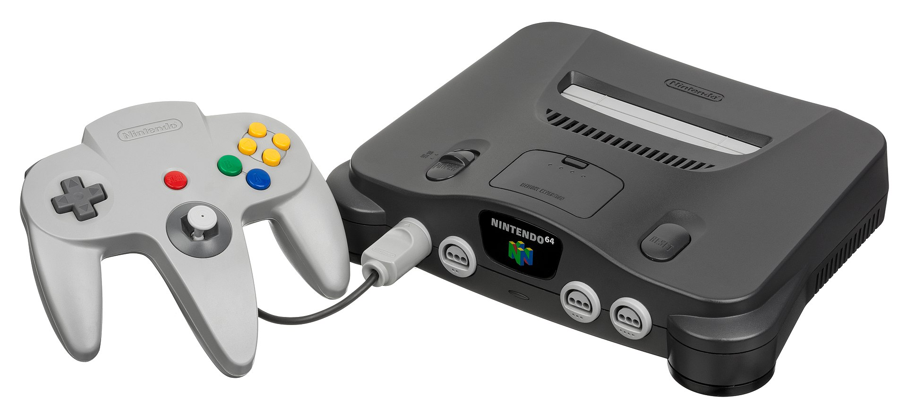

The Sega Saturn
The Sega Saturn is a home video game console developed by Sega and released on November 22, 1994, in Japan, May 11, 1995, in North America, and July 8, 1995, in Europe. Part of the fifth generation of video game consoles, it was the successor to the successful Sega Genesis. The Saturn has a dual-CPU architecture and eight processors. Its games are in CD-ROM format, and its game library contains several ports of arcade games as well as original games.
Development of the Saturn began in 1992, the same year Sega's groundbreaking 3D Model 1 arcade hardware debuted. The Saturn was designed around a new CPU from Japanese electronics company Hitachi. Sega added another video display processor in early 1994 to better compete with Sony's forthcoming PlayStation.
The Saturn was initially successful in Japan but failed to sell in large numbers in the United States after its surprise May 1995 launch, four months before its scheduled release date. After the debut of the Nintendo 64 in late 1996, the Saturn rapidly lost market share in the U.S., where it was discontinued in 1998. Having sold 9.26 million units worldwide, the Saturn is considered a commercial failure; the cancellation of Sonic X-treme, planned as the first 3D entry in Sega's popular Sonic the Hedgehog series, is considered a factor in its performance. The Saturn was succeeded in 1998 by the Dreamcast.
Although the Saturn is remembered for several well-regarded games, including Nights into Dreams, the Panzer Dragoon series, and the Virtua Fighter series, its reputation is mixed due to its complex hardware design and limited third-party support. Sega's management has been criticized for its decisions during the system's development and discontinuation.
Sony PlayStation

The PlayStation (abbreviated as PS, commonly known as the PS1 or its codename PSX) is a home video game console developed and marketed by Sony Computer Entertainment. It was first released on 3 December 1994 in Japan, 9 September 1995 in North America, 29 September 1995 in Europe, and 15 November 1995 in Australia, and was the first of the PlayStation line of video game consoles. As a fifth generation console, the PlayStation primarily competed with the Nintendo 64 and the Sega Saturn.
Development of the console began after a failed venture with Nintendo to create a CD-ROM peripheral for their Super Famicom in the early 1990s. Game production for the console was designed to be streamlined and inclusive, enticing the support of many third-party developers. In July 2000, Sony released a smaller model, the PS one. The PlayStation was succeeded by the PlayStation 2 the same year.
The PlayStation signalled Sony's rise to power in the video game industry. Its release elicited critical acclaim and strong sales; in less than a decade, it became the first computer entertainment platform to ship over 100 million units. Its use of compact discs heralded the game industry's transition from cartridges. Games for the original PlayStation continued to sell until Sony ceased production of both the PlayStation and its games on 23 March 2006 – over eleven years after it had been released, and nearly eight months before the debut of the PlayStation 3. A total of 7,918 games were released for the console over its lifespan, with cumulative sales of 962 million units.
Nintendo 64
The Nintendo 64 (abbreviated as N64, stylized as NINTENDO64) is a home video game console developed and marketed by Nintendo. It was first released on June 24, 1996 in Japan, September 29, 1996 in North America, and March 1, 1997 in Europe and Australia. It was the last major home console to use cartridges as its primary storage format until the Nintendo Switch in 2017. As a fifth generation console, it competed primarily with the PlayStation and the Sega Saturn.
Development of the console began in 1993 under the codename "Project Reality". Although the design was mostly complete by mid-1995, its launch was delayed until 1996. The console takes its name from the 64-bit processing unit. It was launched with three games: Super Mario 64, Pilotwings 64 and Saikyō Habu Shōgi (exclusive to Japan). Time named it Machine of the Year in 1996, and in 2015, IGN named it the ninth-greatest video game console of all time. The Nintendo 64 was discontinued in 2002 following the launch of its successor, the GameCube. The Nintendo 64 was critically acclaimed upon release and remains one of the most recognized video game consoles.
3DO Interactive Multiplayer
The 3DO Interactive Multiplayer, often called the 3DO, is a home video game console developed by The 3DO Company. Conceived by entrepreneur and Electronic Arts founder Trip Hawkins, the 3DO was not a console manufactured by the company itself, but a series of specifications, originally designed by Dave Needle and R. J. Mical of New Technologies Group, that could be licensed by third parties. Panasonic produced the first models in 1993, and further renditions of the hardware were released in 1994 by GoldStar (now LG Electronics) and in 1995 by Sanyo.
Despite having a highly promoted launch (including being named Time magazine's "1993 Product of the Year") and being a host of cutting-edge technologies, the 3DO's high price and an oversaturated console market prevented the system from achieving success comparable to competing consoles from Sega and Nintendo. As a result, it was discontinued in late 1996.